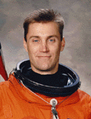

Lyndon B. Johnson Space Center
Houston, Texas 77058
|
National Aeronautics and Space Administration Lyndon B. Johnson Space Center Houston, Texas 77058 |
 |
Biographical Data |
||
James A. (Jim) Pawelczyk (Ph.D.)
Payload Specialist
PERSONAL DATA: Born September 20, 1960, in Buffalo, New York. He identifies Elma, New York as his hometown, where his parents, Joseph and Rita Pawelczyk, continue to reside. Married to the Ruth A. Pawelczyk, M.D. (nee Anderson), daughter of Paul and Barbara Anderson, of State College, Pennsylvania. They have two children. Hobbies include cycling, swimming, woodworking, philately, and outdoor activities.
EDUCATION: Graduated from Iroquois Central High School, Elma, New York, in 1978; Earned two bachelor of arts degrees in biology and psychology from the University of Rochester, New York in 1982; a master of science degree in physiology from the Pennsylvania State University in 1985; and a doctor of philosophy degree in biology (physiology) from the University of North Texas in 1989. He completed a post-doctoral fellowship at the University of Texas Southwestern Medical Center in 1992.
PROFESSIONAL SOCIETIES: American Heart Association, American Physiological Society, American College of Sports Medicine, Society for Neuroscience.
HONORS AND AWARDS: Research Scientist, United States Olympic Swimming Trials, 1984; Pre-doctoral training award, National Institutes of Health, 1988-1989; Research award, Texas Chapter of the American College of Sports Medicine, 1988; Post-doctoral training award, National Institutes of Health, 1989-1992; Young Investigator Award, Life Sciences Project Division, NASA Office of Life and Microgravity Science Applications, 1994, NASA Space Flight Medal (1998).
SCHOLARLY ACTIVITY: Dr. Pawelczyk is co-editor of Blood Loss and Shock, published in 1994. He has been a principal investigator or co-investigator on 11 federal and state grants and contracts, and has over 20 refereed journal articles and 3 invited book chapters in the areas of cardiovascular regulation and cardiovascular physiology.
EXPERIENCE: Post-doctoral fellowship in cardiovascular neurophysiology, University of Texas Southwestern Medical Center, 1989-1992; Visiting scientist, Department of Anaesthesia, Rigshospitalet, Copenhagen, Denmark, 1990; Assistant Professor of Medicine (Cardiology), University of Texas Southwestern Medical Center, 1992-1995; Director, Autonomic and Exercise Physiology Laboratories, Institute for Exercise and Environmental Medicine, Presbyterian Hospital of Dallas, 1992-1995; Assistant Professor of Bioengineering, University of Texas Southwestern Medical Center, 1995; Assistant Professor of Physiology and Kinesiology, Penn State University, University Park, Pennsylvania, 1995-present. Dr. Pawelczyk took leave from Penn State University to fly as a payload specialist on STS-90 (Neurolab).
NASA EXPERIENCE: User design group, GASMAP (Gas Analysis System for Metabolic Analysis Physiology); Unit principal investigator for the NASA Specialized Center for Outreach, Research and Training (NSCORT) grant in integrative physiology. He received a NASA Young Investigator Award in 1994 for his work in the area of autonomic neurophysiology. Dr. Pawelczyk is a co-investigator for experiments to be flown on the Neurolab mission, and two Shuttle-Mir (Phase 1B) flights. Most recently, Dr. Pawelczyk served as a Payload Specialist on STS-90 Neurolab (April 17 to May 3, 1998). During the 16-day Spacelab flight the seven person crew aboard Space Shuttle Columbia served as both experiment subjects and operators for 26 individual life science experiments focusing on the effects of microgravity on the brain and nervous system. The STS-90 flight orbited the Earth 256 times, covered 6.3 million miles, and logged over 381 hours in space.
MAY 1998